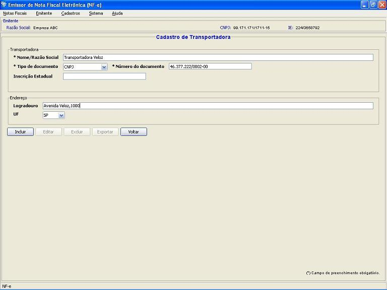

Software Emissor NF-e
Cadastro de Transportadoras
Inclusão
de nova transportadora
Opção de Inclusão de nova transportadora para
o Emitente atual.
Pré-condição: Um emitente
deverá estar previamente iniciado.
- Acessar o menu: Cadastro
-> Transportadora
- Na tela de pesquisa de Transportadoras Cadastradas, acessar a
opção Incluir
- Na tela de Inclusão de Transportadoras, preencher
corretamente os campos
da transportadora
- Após o preenchimento dos campos corretamente,
selecionar a opção Incluir
